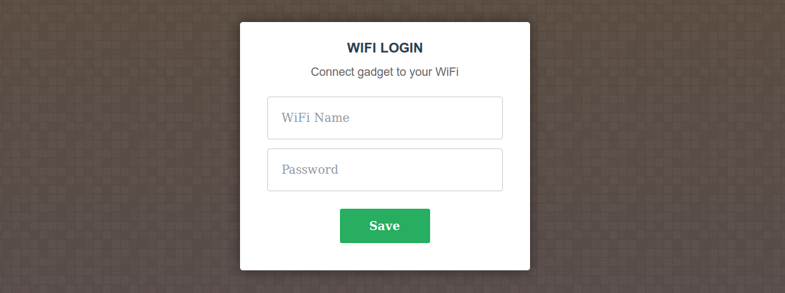

User friendly setup of ESP8266 gadgets
Thu 30 July 2015
The ESP8266 lacks a simple end-user compatible way to be configured with the login details of the local WiFi. Running the ESP8266 in a 'captive portal' mode where every http request is hijacked and replaced with form allows the end user to submit the credentials of the local WiFi hotspot by simply connecting to an ESP8266 hosted access point.
esp8266_nodemcu_wifi_setup is designed to provide a simple interface for users to configure their ESP8266/NodeMCU based devices through.
- Start ESP.
- Connect to the "SetupGadget" WiFi through your internet enabled thing of choice.
- Submit credentials of your local WiFi.
- The ESP reboots and connects to your local WiFi.
What is this magic! How could a mere mortal like me summon features like this?!
Let me tell you..
By default DNS is not announced in the DHCP offer message, because a DNS server does not ship with NodeMCU. In order to announce that the ESP8266 is running a DNS server, NodeMCU has to be recompiled to support that. A guide to building NodeMCU can be found here.
Thanks to the wonderful work of Andy Reischles on Captive Portal, a lua implementation of a domain hijacking DNS server exists. Which will allow an ESP8266 to redirect all traffic to itself.
Detailed guide
- In dhcpserver.h, #define USE_DNS 1
- Build NodeMCU.
- Flash NodeMCU.
- Upload all .lua files and index.html.
- Reboot ESP.
What you need to do
After a user has connected throught the portal and sucessfully configured the the ESP8266 with the credentials of the local WiFi, something lua service should be started so that the ESP8266 actually does something.
I would suggest adding something like this to init.lua:
dofile("init_connected.lua")
Where init_connected.lua is where your script resides.